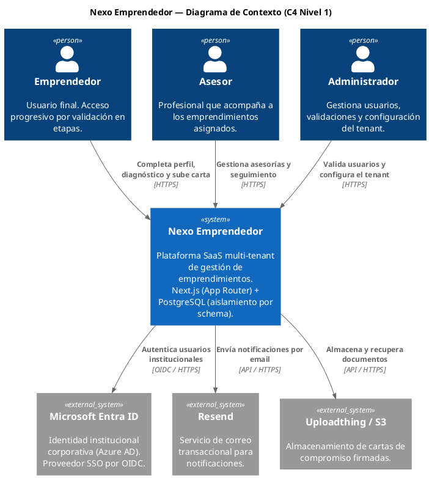
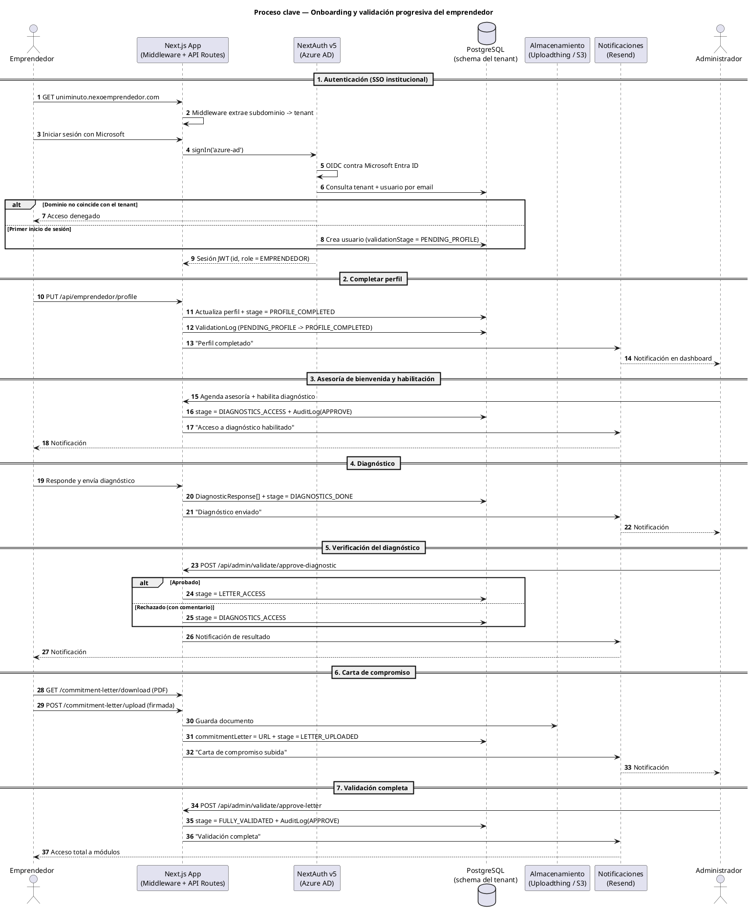

Formalizar el ecosistema de documentación viva del repositorio oficial de Nexo Emprendedor mediante Architecture Decision Records (ADRs) y diagramas como código en PlantUML, garantizando trazabilidad entre necesidad → decisión → diseño, control de versiones en Git y una base sólida para el onboarding de desarrolladores y asistentes de IA.
| Recurso | Ruta en el repositorio |
|---|---|
| Índice y visión global de vistas | docs/architecture/README.md |
| ADR-0001 — Patrón arquitectónico (Monolito Modular) | docs/architecture/adr/0001-patron-arquitectonico.md |
| ADR-0002 — Sistema de persistencia (PostgreSQL por schema) | docs/architecture/adr/0002-sistema-de-persistencia.md |
| ADR-0003 — Estrategia de seguridad (NextAuth + Azure AD) | docs/architecture/adr/0003-estrategia-seguridad.md |
| Diagrama | Fuente .puml | Render |
|---|---|---|
| C4 Nivel 1 — Contexto del sistema | diagrams/c4-contexto.puml | c4-contexto.png |
| Secuencia — Proceso clave (onboarding) | diagrams/secuencia-proceso-clave.puml | secuencia-proceso-clave.png |
| ID | Decisión | Estado |
|---|---|---|
| ADR-0001 | Patrón arquitectónico: Monolito Modular (Next.js App Router + Turborepo) | Aceptado |
| ADR-0002 | Sistema de persistencia: PostgreSQL 16 multi-tenant por schema + Prisma | Aceptado |
| ADR-0003 | Estrategia de seguridad: NextAuth v5 + Azure AD + RBAC por etapas | Propuesto |
Se cumple el criterio de evolución de ADRs: tres ADRs interconectados, con al menos uno en estado Aceptado (0001, 0002) y otro en estado Propuesto (0003).

diagrams/c4-contexto.puml.
diagrams/secuencia-proceso-clave.puml.| Necesidad | Decisión (ADR) | Diseño (Diagrama) |
|---|---|---|
| Un único código base para múltiples instituciones. | ADR-0001 | C4 Contexto |
| Aislamiento total de datos sensibles por institución. | ADR-0002 | C4 Contexto · Secuencia |
| Identidad institucional (SSO) y acceso progresivo por etapas. | ADR-0003 | Secuencia |
| Trazabilidad y auditoría de cada transición de estado. | ADR-0003 | Secuencia |
.puml se diferencian en los pull requests, permitiendo revisar cambios de arquitectura como cambios de código.README.md de arquitectura ofrece la visión global en minutos..puml son indexables y consultables directamente (sin OCR).Los diagramas se regeneran desde su fuente en texto plano:
java -jar plantuml.jar -tpng -charset UTF-8 docs/architecture/diagrams/*.puml
Nexo Emprendedor — Documentación de Arquitectura viva · Generado el 14 de octubre de 2026